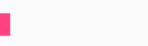
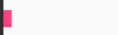

AccelerateDecelerateInterpolator 在动画开始与介绍的地方速率改变比较慢，在中间的时候加速
在动画开始的地方速率改变比较慢，然后开始加速
AnticipateInterpolator 开始的时候向后然后向前甩
AnticipateOvershootInterpolator 开始的时候向后然后向前甩一定值后返回最后的值
BounceInterpolator 动画结束的时候弹起
CycleInterpolator 动画循环播放特定的次数，速率改变沿着正弦曲线
DecelerateInterpolator 在动画开始的地方快然后慢
LinearInterpolator 以常量速率改变
OvershootInterpolator 向前甩一定值后再回到原来位置
//ofInt的参数是可变长参数，如 ofInt(2,90,45)就表示从数值 2 变化到数字 90 再变化到数字 45
ValueAnimator animator = ValueAnimator.ofInt(0, 400);
//监听变化并改变textView位置
animator.addUpdateListener(new ValueAnimator.AnimatorUpdateListener() {
@Override
public void onAnimationUpdate(ValueAnimator animation) {
int curValue = (int) animation.getAnimatedValue();
//通过layout()修改位置
tv.layout(tv.getLeft(), curValue, tv.getRight(), curValue + tv.getHeight());
}
});
animator.setRepeatMode(ValueAnimator.REVERSE);//循环播放模式：反向退回
animator.setRepeatCount(ValueAnimator.INFINITE);//循环播放次数(这个值其实是-1,会一直播放下去)
animator.setInterpolator(new BounceInterpolator());//在这里设置插值器
animator.setDuration(1000);//播放时长
animator.start();